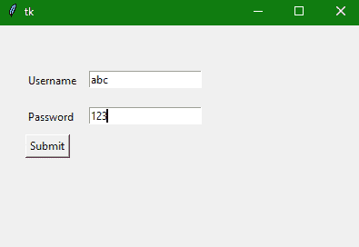

Tkinter 标签小部件
在本教程中，我们将介绍 Python 中的 Tkinter 标签小部件，它用于在 GUI 应用中创建一个标签，我们可以在其中显示任何文本或图像。
Tkinter 中的标签小部件用于显示框**可以放置图片和文字**。
标签小部件主要用于向用户提供关于 Python 应用中使用的其他小部件的消息。
您可以随时在标签小部件中更改或更新 tex t。
这个小部件在显示一些文本时，只使用一种字体。
您可以执行其他任务，如给文本的某个部分加下划线，也可以将文本跨到多行。
在标签中显示的文本或文本的部分有各种选项可以配置。**
Tkinter Label Widget
标签小部件的语法如下所示，
W = Label(master,options)
在上面的语法中，master参数表示父窗口。您可以使用许多options来配置文本，这些选项被写成逗号分隔的键值对。
Tkinter Label Widget 选项
以下是标签小部件使用的选项:
| 选项名称 | 描述 |
|---|---|
anchor |
该选项主要用于控制文本在提供的小部件尺寸中的位置。默认值为中心，用于对齐所提供空间中中心的文本。 |
bd |
该选项用于小部件的边框宽度。它的默认值是 2 像素。 |
bitmap |
该选项用于将位图设置为指定的图形对象，以便现在标签可以表示图形而不是文本。 |
bg |
该选项用于小部件的背景颜色。 |
cursor |
该选项用于指定当鼠标在标签上移动时显示什么类型的光标。该选项默认使用标准光标。 |
fg |
该选项用于指定写在小部件内的文本的前景色。 |
font |
该选项指定标签内文字的字体类型。 |
height |
该选项指示部件的高度 |
image |
该选项表示显示为标签的图像。 |
justify |
该选项指定标签中多条线的对齐。默认值为中心。其他值为右、左；你可以根据你的要求来证明 |
padx |
该选项表示文本的水平填充。该选项的默认值为 1 。 |
pady |
该选项指示文本的垂直填充。该选项的默认值为 1 。 |
relief |
该选项指示边框的类型。该选项的默认值为平 |
text |
此选项设置为字符串变量，它可能包含一行或多行文本 |
textvariable |
该选项与带有标签的Tinter 变量相关联。如果你改变这个变量的值，那么标签内的文本将被更新。 |
underline |
该选项用于给文本的特定部分加下划线。该选项的默认值=-1(无下划线)；您可以将其设置为 n 以内的任意整数值，计数从 0 开始。 |
width |
该选项表示小部件的宽度。 |
wraplength |
不要让只有一行作为标签文本，你可以把它分成任意多行，每一行都有这个选项指定的字符数。 |
Tkinter 标签小部件示例
现在让我们看看标签小部件的一个基本示例，下面给出了代码片段:
import tkinter
from tkinter import *
win = Tk()
var = StringVar()
label = Label( win, textvariable=var, relief=RAISED )
# set label value
var.set("Hey!? Welcome to StudyTonight")
label.pack()
win.mainloop()
在上面的代码中，我们创建了一个简单的变量StringVar()，然后给它赋值，这个变量被赋值给 Label 小部件的textvariable选项。
Tkinter 标签小部件-另一个例子
下面我们有另一个代码片段，以便更清楚地理解。让我们看看下面给出的代码片段:
from tkinter import *
win = Tk()
win.geometry("400x250")
#creating a label
username = Label(win, text = "Username").place(x = 30,y = 50)
#creating second label
password = Label(win, text = "Password").place(x = 30, y = 90)
submitbutton = Button(win, text = "Submit",activebackground = "red", activeforeground = "blue").place(x = 30, y = 120)
e1 = Entry(win,width = 20).place(x = 100, y = 50)
e2 = Entry(win, width = 20).place(x = 100, y = 90)
win.mainloop()
无论何时运行上述代码，在用户名和密码标签中输入值后，当您点击提交按钮时，其颜色变为红色。

不要担心上面代码中使用的按钮小部件和输入小部件，我们将在接下来的教程中很快介绍它们。这个例子是为了让你了解如何使用 Tinter 小部件为你的 Tinter 应用创建用户界面。
总结:
在本教程中，我们介绍了 Tkinter Label Widget，它用于在 Tkinter GUI 应用中显示文本和图像，或者添加带有表单输入字段的文本，就像我们在上面的示例中所做的那样。